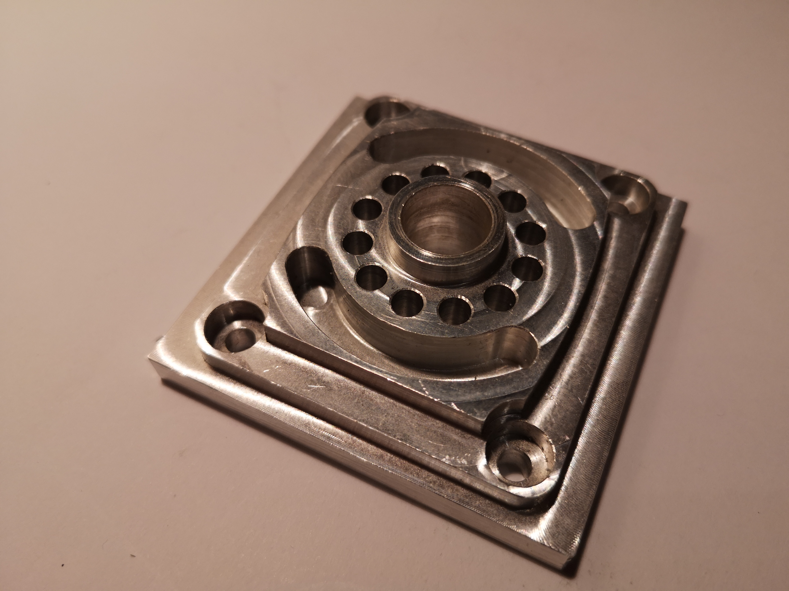

Lemezalakítással, kézi forgácsolással, hegesztéssel készült mécsestartó
Egyetemes esztergán készült munkadarabok
NCT és SinuTrain vezérlésű esztergán készült munkadarabok

Marással készült munkadarabok
NCT vezérlésű marón készült munkadarab

SinuTrain vezérlésű marón készült munkadarab